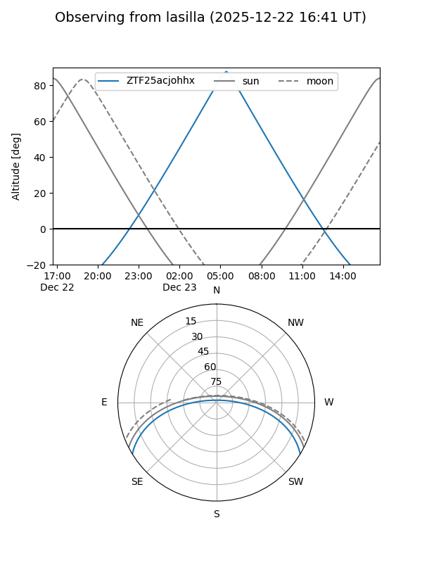
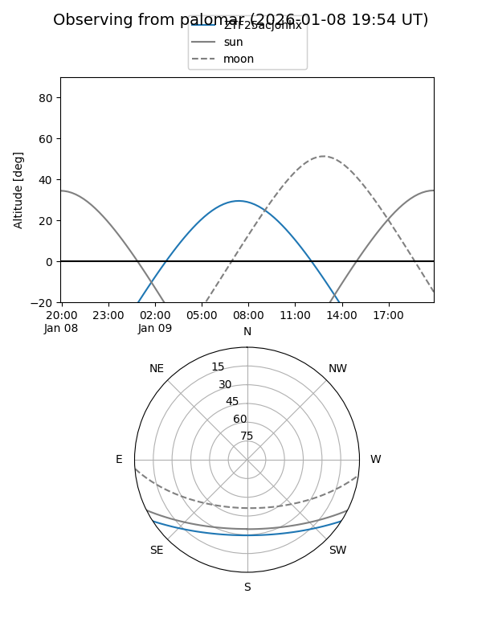

ZTF25acjohhx
Target ZTF25acjohhx at 2026-01-09 12:49
Aliases and brokers:
FINK: link
Lasair: link
ALeRCE: link
alt names
ZTF25acjohhx (ztf,fink_ztf)
Coordinates:
equatorial (ra, dec) = 102.3203,-27.09080
equatorial (HMS+DMS) = 06:49:16.88,-27:05:26.86
galactic (l, b) = (237.2063,-12.42208)
Flags:
Photometry:
last ztfg=19.45
2 ztfg detections
Lightcurve

Visibility


Additional plots